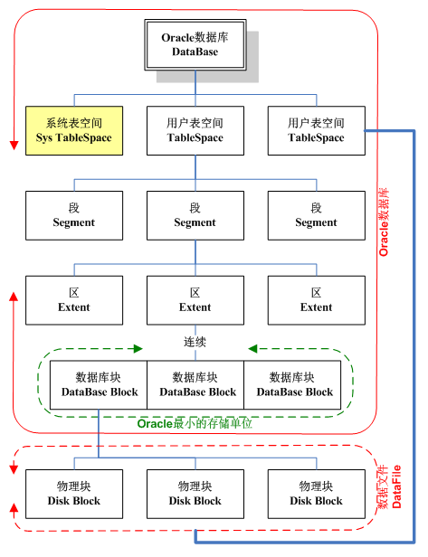
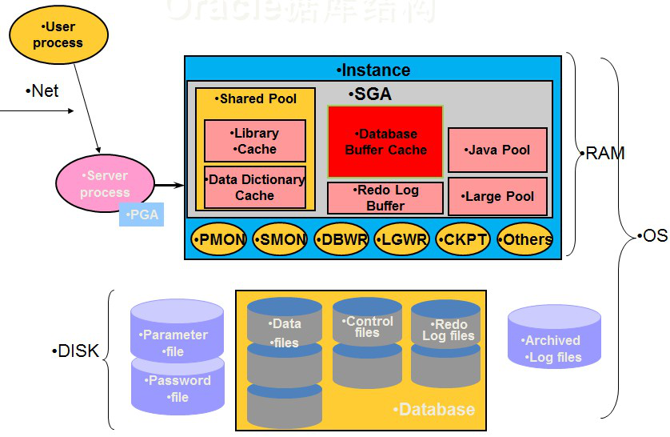
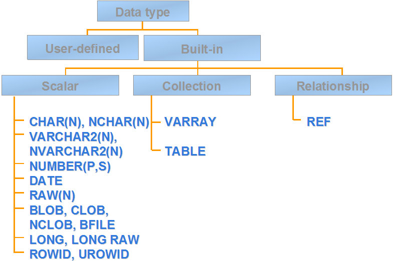
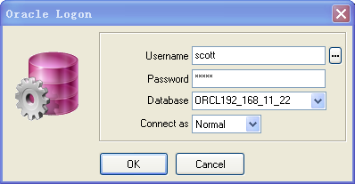
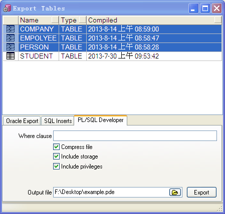
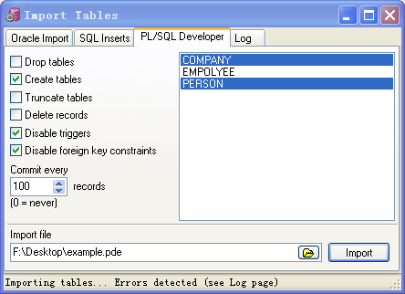

Oracle学习笔记
1. 前言
本学习笔记仅涵盖了基本的 Oracle 入门知识，是我在学习时的随笔记录整理，其中部分内容可能存在错漏。若有疑问敬请提出或指正。
2. 参考资料
| 名称 | 来源 |
|---|---|
| Oracle新建用户、角色，授权，建表空间 | 红黑联盟 |
| Oracle表空间的相关查询 | 百度文库 |
| 查找Oracle数据文件、表空间的位置 | 网易博客 |
| Oracle创建表空间、给用户分配表空间 | CSDN |
| Oracle新建数据库 | 百度知道 |
| Oracle数据库导入导出命令 | 博客园 |
| expdp 详解及实例 | 百度文库 |
| expdp/impdp 及 exp/imp | 博客园 |
| Oracle数据库impdb和expdb操作 | 新浪博客 |
3. 数据库体系结构
3.1. 逻辑与物理结构

3.1.1. 数据库 Database
数据库是磁盘上存储的数据的集合（包括数据文件、日志文件、配置文件和控制文件），但Oracle同时也是一种关系型数据库管理系统（RDBMS），它能够提供关系模式存储和访问数据的方法，因此“数据库”不纯粹指物理上的数据，也指在逻辑上的各种对象的组合。
3.1.2. 表空间 TableSpace
表空间是数据库的逻辑划分，它是数据库中物理编组的数据仓库。
一个数据库是由一个或多个表空间所组成的，每个数据库至少有一个表空间（叫系统表空间），而其他表空间则可供用户群及应用系统共同使用。
一个表空间只能属于一个数据库。
3.1.3 段 Segment
段是表空间的逻辑划分，一个表空间包含许多段。
段包括一个表空间内特定逻辑结构的所有数据，段不能跨表空间存放。
3.1.4. 区 Extent
区是段的逻辑划分，一个段是一个或多个不连续的区的集合。
一个区由一组连续的数据库块组成。
3.1.5. 数据库块 DatabaseBlock
数据库块也称逻辑块或Oracle块，它是Oracle最小的存储单位。Oracle每次请求数据的时候，都是以块为单位。也就是说，Oracle每次请求的数据是块的整数倍。如果Oracle请求的数据量不到一块，Oracle也会读取整个块。
数据库块对应磁盘上一个或多个物理块（不必连续）。
3.2. 模式对象
3.2.1. 实例 Instance
数据库实例是运行在数据库文件上的一组Oracle后台进程/线程以及一个共享的内存区。即用于访问一个数据库文件集的一个存储结构及后台进程的集合。
数据库可以由数据库实例装载和打开。一般一个数据库对应一个数据库实例，但多个不同的Oracle实例可以装在同一个Oracle数据库。
3.2.2. 数据库链 DatabaseLink
数据库链是与远程数据库连接的存储定义，它们用于查询分布数据库环境的远程者。由于存储在DBA_DB_LINKS数据字典中，所以可以把它们看作一种数据库对象类型。
3.2.3. 表 Table
表是数据库中用来存储数据的对象，是有结构的数据的集合。
数据在表中式按行和列的格式组织排列，表中的每一列为称为“字段”（又称“属性”），每一行称为“元组”（又称“记录”）。表上有约束规则，用于确保数据的有效性。
3.2.4. 视图 View
视图是存储在数据库中的查询的SQL语句，它是一张虚拟表。
使用它主要出于两种主要原因：安全原因，视图可以隐藏一些数据；另一原因是可使复杂的查询易于理解和使用。 其中物化视图是视图的一种特例，它类似于索引。
物化视图是用于预先计算并保存表连接或聚集等耗时较多的操作的结果，这样在执行查询时，就可以避免进行这些耗时的操作，从而快速的得到结果，提高查询性能。
增加和删除物化视图不会影响应用程序中SQL 语句的正确性和有效性。但物化视图需要占用存储空间；当基表发生变化时，物化视图也应当刷新。
3.2.5. 同义词 Synonym
同义词是指向其它数据库表的数据库指针。同义词有两种类型：私有（private）和公共（public）。
私有的同义词是在指定的模式中创建并且只创建者使用的模式访问。
公共同义词是由public 指定的模式访问，所有数据库模式（用户）都可以访问它。
3.2.6. 索引 Index
当从表中访问数据时，Oracle提供了两个选择：从表中读取每一行（即全表扫描）；或者通过ROWID一次读取一行。
索引不能滥用，当访问大型表的少量行时，使用索引可能效率更高。性能统计结果，当索引搜索的行数不多于总行数的4%时，性能比全表扫描快。
3.2.7. 序列 Sequence
序列是用于产生唯一数码的数据库对象，序列创建时带有初始值、增量值、最大值等，最大可达38位整数。
在Oracle由于没有类似于MySQL的auto_increment或SyBase的IDENTITY，因此主键自增基本都依赖于使用序列实现。
3.2.8. 存储过程 StoredProcedure
一组为了完成特定功能的SQL语句集，经编译后存储在数据库中，用户通过指定存储过程的名字并给出参数（如果该存储过程带有参数）来执行它。
3.2.9. 触发器 Trigger
触发器（trigger）是个特殊的存储过程，它的执行不是由程序调用，也不是手工启动，而是由个事件来触发，比如当对一个表进行操作（insert，delete， update）时就会激活它执行。触发器经常用于加强数据的完整性约束和业务规则等。
3.2.10. 函数 Function
可以看作是一个简单的存储过程，但是使用限制比存储过程多，但是可以（且仅可以）返回单行值，可以在select语句中嵌套使用。
3.2.11. 数据字典
数据字典是Oracle存放有关数据库信息的地方，它是一组表和视图结构。存放在SYSTEM表空间中，其用途是用于描述数据。
Oracle的系统进程会通过数据字典对数据库进行操作，用户也可以用SQL语句访问数据字典，数据字典内容包括：
- 数据库中所有模式对象的信息，如表、视图、簇、及索引等。
- 分配多少空间，当前使用了多少空间等。
- 列的缺省值。
- 约束信息的完整性。
- Oracle用户的名字。
- 用户及角色被授予的权限。
- 用户访问或使用的审计信息。
- 其它产生的数据库信息。
3.3. Oracle进程与内存结构

当在计算机服务器上启动Oracle数据库后，称服务器上启动了一个Oracle实例（Instance）。
Oracle实例（Instance）是存取和控制数据库的软件机制，它包括Oracle进程和系统全局区（System Global Area，SGA）两部分。
3.3.1. Oracle进程
Oracle进程由用户进程、服务器进程和后台进程所组成。
当用户运行一个应用程序时，系统就为它建立一个用户进程。服务器进程与用户进程连接并通讯，为相连的用户进程处理Oracle请求服务。
为了提高系统性能，更好地实现多用户功能，ORACLE还在系统后台启动一些后台进程，用于数据库数据操作。
后台进程主要包括：
- SMON 系统监控进程：（system monitor）负责完成自动实例恢复和回收分类（sort）表空间。
- PMON 进程监控进程：（PRocess monitor）实现用户进程故障恢复、清理内存区和释放该进程所需资源等。
- DBWR 数据库写进程：数据库缓冲区的治理进程。在它的治理下，数据库缓冲区中总保持有一定数量的自由缓冲块，以确保用户进程总能找到供其使用的自由缓冲块。
- LGWR 日志文件写进程：是日志缓冲区的治理进程，负责把日志缓冲区中的日志项写入磁盘中的日志文件上。每个实例只有一个LGWR进程。
- CKPT 检查点进程：用于触发检查点事件，把数据缓冲区的数据写入磁盘，并更新控制文件的检查点位置。
3.3.2. 内存结构
SGA是系统为实例分配的一组共享内存缓冲区，用于存放数据库实例和控制信息，以实现对数据库中数据的治理和操作。
SGA在实例启动时被自动分配，当实例关闭时被收回。数据库的所有数据操作都要通过SGA来进行。
内存结构的主要组成有：
- 数据缓冲区 Database Buffer Cache：存放数据库中数据库块的拷贝。它是由一组缓冲块所组成，这些缓冲块为所有与该实例相链接的用户进程所共享。
- 日志缓冲区Redo Log Buffer：存放数据操作的更改信息。它们以日志项的形式存放在日志缓冲区中。当需要进行数据库恢复时，日志项用于重构或回滚对数据库所做的变更。
- 共享池Shared Pool：包含用来处理的SQL语句信息。它包含共享SQL区和数据字典存储区。共享SQL区包含执行特定的SQL语句所用的信息。数据字典区用于存放数据字典，它为所有用户进程所共享。
3.4. Oracle的读写机制
3.4.1. 写操作与检查点
在数据库系统中，写日志和写数据文件是数据库中IO消耗最大的两种操作，在这两种操作中写数据文件属于分散写，写日志文件是顺序写。
因此为了保证数据库的性能，通常数据库都是保证在提交（commit）完成之前，要先保证日志都被写入到日志文件中。而脏数据块则暂存在数据缓存（Database Buffer Cache）中，再不定期的分批写入到数据文件中。也就是说日志写入和提交操作是同步的，而数据写入和提交操作是不同步的。
这样就存在一个问题，当一个数据库崩溃的时候并不能保证缓存里面的脏数据全部写入到数据文件中，这样在实例启动的时候就要使用日志文件进行恢复操作，将数据库恢复到崩溃之前的状态，保证数据的一致性。
检查点（CheckPoint）是这个过程中的重要机制，Oracle通过它来确定在恢复数据时，应该扫描哪些重做日志应，并将其应用于恢复。
一般所说的CheckPoint是一个数据库事件，CheckPoint事件由LGWR或CKPT进程发出。当CheckPoint事件发生时，DBWn（n表示可能有多个写进程，即并行写）会将脏块写入到磁盘中，同时数据文件和控制文件的文件头也会被更新，以记录最新的CheckPoint信息。
3.4.2. 读操作
相对于写操作，读操作相对简单。
当用户查询数据时，Oracle数据库首先从数据缓冲区查找。若所要查询的数据不在数据缓冲区中，则Oracle数据库会启动相应的后台进程从数据文件中读取数据，并保存到数据缓冲区中。
3.5. 物理构成
每一个Oracle数据库是主要由三种类型的文件组成：数据文件（.DBF）、日志文件（.LOG）和控制文件（.CTL），另外还包括一些配置文件（参数文件）。
3.5.1. 数据文件
数据文件（Data File）用于存储数据库数据的文件，如表中的记录，索引，数据字典等。
由于Oracle数据库的表空间与数据文件是一对多的关系，因此当向某个表添加数据时，插入到表中的数据可能仅在一个数据文件中，也可能跨越在多个数据文件中。
数据文件的读写方式前面已提过，此处不再详述。
3.5.2. 日志文件
在Oracle中，日志文件也叫做重做日志文件或重演日志文件（Redo Log Files）。日志文件用于记录对数据库的修改信息，这包括用户对数据的修改和管理员对数据结构结构的修改。但如果只是对数据库中的信息进行查询操作，则不会产生日志信息。
在Oracle中，当用户对数据库的数据执行了修改操作，则修改信息首先被记录在日志缓冲区中。在用户commit（或日志缓冲区满1/3时、或超时3秒（可设置））后，由LGWR进程将日志信息从日志缓冲区中读出并写到日志文件中。这时，数据文件中保存的数据可能是修改前的数据，也可能是修改后的数据，但在日志文件中则记录了修改前和修改后两组数据。因此日志文件是保证数据库系统安全、进行备份与恢复的重要手段。日志文件的损坏造成的后果比损坏数据文件更严重，它可能会导致整个数据库系统不能正常使用。
3.5.3. 日志文件组
在Oracle数据库中，日志文件是成组使用的。日志文件的组织单位叫日志文件组，日志文件组中的日志文件叫日志成员。每一个Oracle数据库系统都有多个日志文件组，每一组可以由一个或多个日志成员（即日志文件）组成，但同一组的日志成员所存储的信息完全相同，它们是镜像关系。
为了防止日志文件被物理损坏，一般建议在每个日志文件组中设置多个日志成员进行镜像，并且镜像文件应该被存储在不同的物理磁盘中。
在日志工作过程中，多个日志文件组之间是循环使用的。当一日志文件组被填满后，将会发生日起切换，系统自动转换到另一个日志文件组。如果所有的日志文件组都被填满后，则系统将日志信息写入到第一个日志文件组中，这时第一个日志文件组中的日志信息可能被覆盖掉（取决于数据库的工作模式）。
在Oracle数据库中，数据库有两种运行模式：归档模式（ARCHIVELOG），和非归档模式（NOARCHIVELOG）。
数据库运行在非归档模式时，如果发生日志切换且需要覆盖，则日志信息直接被覆盖。而当运行在归档模式时，如果发生日志切换且需要覆盖，则系统将启用ARCH进程将要被覆盖的日志信息保存到磁盘或磁带上形成归档日志（即历史日志文件）。在默认情况下，Oracle不采用归档模式。
3.5.4. 控制文件
Oracle的控制文件是一个很小的二进制文件，它用于描述数据库的物理结构。控制文件一般在安装Oracle系统时自动创建。
由于控制文件存放有数据文件和日志文件等信息，因此Oracle数据库在启动时，数据库须访问控制文件。在数据库的使用过程中，Oracle将不断更新控制文件。如果由于某些原因导致控件文件被损坏，那么数据库也就不能正常工作了。
由于控制文件的重要性，因此一个数据库至少应该包含一个以上的控制文件，Oracle 10g默认包含了3个控制文件，每个控制文件都包含了相同的信息。这样可确保在数据库运行时，如果某个控制文件损坏，Oracle会自动使用另一个控制文件，不致于因某个控制文件损坏而无法启动数据库。
3.5.5. 配置文件
构成Oracle数据库物理结构的还具有另外一种重要的文件：配置文件（也即参数文件）。配置文件记录了Oracle数据库的基本参数信息，主要包括数据库名、控制文件所在路径、进程等。
配置文件在安装Oracle数据库系统时由系统自动创建，如果想要对数据库的某些参数进行设置，则尽可能过OEM或ALTER SYSTEM命令来修改，一般避免直接使用编辑器修改配置文件。
4. Oracle的安装与管理工具
4.1. Oracle的安装
略。请自行百度或Google查找Oracle在Linux下的安装方法。
以下主要以Linux下的Oracle 10g作为背景。
4.2. Oracle的启动
| 阶段 | 阶段名称 | 描述 | 命令 |
|---|---|---|---|
| 第一阶段 | nomount | 读取参数文件，分配实例 | startup nomount |
| 第二阶段 | mount | 加载控制文件的信息到内存 | startup mount 或 alter database mount |
| 第三阶段 | open | 加载所有需要的数据文件和联机日志文件 | Startup 或 alter atabase open |
在启动Oracle时若启动失败，则可参照上表核查是在第几阶段失败，则对应再去检查对应文件的完整性即可发现启动失败的原因。
4.3. Oracle的关闭
| 关闭方式 | 描述 |
|---|---|
| shutdown normal | 不允许建立新的连接（普通用户） 等待查询结束 等待事务结束 产生检查点（完全检查点） 关闭数据文件 卸载控制文件 |
| shutdown transactional | 不允许建立新的连接（普通用户） 不等待查询结束（查询的会话被杀掉） 等待事务结束 产生检查点（完全检查点） 关闭数据文件，卸载控制文件 关闭实例 |
| shutdown immediate | 不允许建立新的连接（普通用户） 不等待查询结束（查询的会话被杀掉） 不等待事务结束（将事务rollback） 产生检查点（完全检查点） 关闭数据文件 卸载控制文件 |
| shutdown abort | 相当于拔电源的关闭方式，易造成脏库 重新启动数据库时需要实例的恢复 |
4.4. Oracle的管理工具
| 关闭名称 | 描述 |
|---|---|
| datastudio | 通用数据库客户端工具 |
| PL/SQL | Oracle专用客户端工具 |
| SQL loader | Oracle的数据加载工具，常用于Linux下的大数据迁移 |
5. Oracle的实例管理
5.2. 创建数据库
对建库SQL不作要求，但从Oracle的建库SQL可以了解数据库的构成：
CREATE DATABASE mynewdb /* 创建数据库mynewdb */
USER SYS IDENTIFIED BY pz6r58 /* 数据库用户SYS的密码为pz6r58 */
USER SYSTEM IDENTIFIED BY y1tz5p /* 数据库用户SYSTEM的密码为y1tz5p */
LOGFILE /* 创建日志文件组GROUP1、GROUP2、GROUP3 */
GROUP 1 ('/u01/oracle/oradata/mynewdb/redo01.log') SIZE 100M,
GROUP 2 ('/u01/oracle/oradata/mynewdb/redo02.log') SIZE 100M,
GROUP 3 ('/u01/oracle/oradata/mynewdb/redo03.log') SIZE 100M
MAXLOGFILES 5 /* 最多的日志文件组数量为5 */
MAXLOGMEMBERS 5 /* 每个日志文件组的最大成员数为5 */
MAXLOGHISTORY 1 /* 最多的历史日志个数为1 */
MAXDATAFILES 100 /* 最多可以打开的数据文件个数为100 */
MAXINSTANCES 1 /* 最多只允许有1个实例能够 mount 和 open 数据库 */
CHARACTER SET US7ASCII /* 数据库字符集为US7ASCII（对普通的字段属性有效，如CHAR、VARCHAR等） */
NATIONAL CHARACTER SET AL16UTF16 /* 国家字符集为AL16UTF16（仅对带“N”前缀的字段属性有效，如NCHAR、NVARCHAR等） */
/* 配置系统表空间的物理位置，若已存在则覆盖，并使用本地化管理方式 */
DATAFILE '/u01/oracle/oradata/mynewdb/system01.dbf' SIZE 325M REUSE EXTENT MANAGEMENT LOCAL
/* 配置系统表的辅助表空间的物理位置，若已存在则覆盖 */
SYSAUX DATAFILE '/u01/oracle/oradata/mynewdb/sysaux01.dbf' SIZE 325M REUSE
/* 配置系统表的辅助表空间的物理位置，若已存在则覆盖 */
DEFAULT TEMPORARY TABLESPACE tempts1
TEMPFILE '/u01/oracle/oradata/mynewdb/temp01.dbf' SIZE 20M REUSE
/* 配置默认临时表空间的物理位置，若已存在则覆盖 */
UNDO TABLESPACE undotbs DATAFILE
'/u01/oracle/oradata/mynewdb/undotbs01.dbf' SIZE 200M REUSE
/* 配置撤销表空间的物理位置，若已存在则覆盖，当空间不足时自动扩展，且不限制表空间的物理大小 */
AUTOEXTEND ON MAXSIZE UNLIMITED;
5.3. 表空间的创建与管理
5.3.1. 创建表空间
（1）创建表空间example，其下有2个数据文件，大小分别为100M（若创建的是临时表空间，则要把第1行修改为CREATE TEMPORARY TABLESPACE example TEMPFILE）；
（2）对于第2个数据文件，当空间不足时可以自动扩展，扩展上限为4G，同时使用本地化管理方式（另一种是字典管理方式extent management dictionary），指定区尺寸为1M（默认为64k），启动段空间自动管理。
CREATE TABLESPACE example DATAFILE
'/oradata/orclnew/example_01.dbf' SIZE 100M,
'/oradata/orclnew/example_02.dbf' SIZE 100M autoextend on maxsize 4g extent management local uniform size 1m segment space management auto;
5.3.2. 管理表空间
/* 删除表空间 */
DROP TABLESPACE example INCLUDING CONTENTS;
/* 扩展表空间 */
ALTER TABLESPACE example ADD DATAFILE '/DISK6/example_04.dbf' SIZE 200M AUTOEXTEND ON NEXT 10M MAXSIZE 500M;
ALTER DATABASE DATAFILE '/DISK5/example_02.dbf' RESIZE 200M;
/* 重命名表空间 */
ALTER TABLESPACE example RENAME DATAFILE '/DISK4/example_01.dbf' TO '/DISK5/example_01.dbf';
ALTER DATABASE RENAME FILE '/DISK1/system_01.dbf' TO '/DISK2/system_01.dbf';
/* 更改数据库的存储参数 */
ALTER TABLE summit.employee PCTFREE 30 PCTUSED 50 STORAGE(NEXT 500K MINEXTENTS 2 MAXEXTENTS 100);
/* 表空间的数据迁移 */
ALTER TABLE employee MOVE TABLESPACE data1;
/* 获取表空间的大小信息 */
SELECT TABLESPACE_NAME, SUM(BYTES) FROM DBA_DATA_FILES GROUP BY TABLESPACE_NAME
/* 获取表空间的剩余大小信息 */
SELECT TABLESPACE_NAME, SUM(BYTES) FROM DBA_FREE_SPACE GROUP BY TABLESPACE_NAME
5.4. 表的创建与管理
5.4.1. 创建表
CREATE TABLE example(
ID Number(4) NOT NULL PRIMARY KEY,
NAME VARCHAR(25) NOT NULL,
………………
TOTAL_SCORE NUMBER(3,0)
);
在数据库中，建表时一定要关注主键，即尽量都有主键，除非是一些流水表。
5.4.2. 表约束
| 约束类型 | 描述 |
|---|---|
| NOT NULL | 非空约束，字段值不可以为空 |
| UNIQUE | 唯一约束，字段值不可以重复 |
| PRIMARY | 主键约束，包括了非空约束和唯一约束 |
| FOREIGIN KEY | 外键约束，要求字段的值必须和另外一个表某个字段的值相匹配 |
| CHECK | 检查约束，该字段里面的值必须符合一个静态的条件（范围、枚举等） |
| REF | 关联约束。其中的一列或者是多列是其他的表中的值 |
除此之外，表约束还有一个延迟性设置（默认是非延迟的）。
在非延迟（Initially Immediate）情况下，任何的修改都会马上进行约束校验。而在延迟（Intially Deferred）情况下，当所有修改都完成并commit的时候才会进行约束校验，此时可能会因约束问题引发回滚，因此一般都避免设置为延迟校验。
5.4.3. 数据类型

5.4.4. 外部表
外部表是在数据库以外的文件系统上存储的只读表，它是按一定格式分割的文本文件或者其他类型的表，例如EXCEL、CSV等文件。外部表对于Oracle数据库来说，就好比是一张视图，在数据库中可以像视图一样进行查询等操作。这个视图允许用户在外部数据上运行任何的SQL语句，而不需要先将外部表中的数据装载进数据库中。
建立一个在“/opt/directory/test”目录下并以“,”作为数据分隔的外部表的步骤如下：
/* 创建目录Directory */
CREATE DIRECTORY TestTable_dir AS '/opt/directory/test';
/* 创建外部表 */
CREATE TABLE TestTable(
ID VARCHAR2(10),
NAME VARCHAR2(20),
TYPE VARCHAR2(20),
AGE VARCHAR2(20)
) ORGANIZATION EXTERNAL(
TYPEORACLE_LOADER
DEFAULT DIRECTORY TestTable_dir
ACCESS PARAMETERS(fields terminated by ',')
LOCATION('TestTable.csv')
);
5.5. 索引管理
5.5.1. 索引分类
- 逻辑划分：单行索引、复合索引、唯一索引、非唯一索引、函数索引
- 物理划分：反转索引、分区索引、全局索引、B-map索引、B-tree索引
5.5.2. 索引管理
/* 创建B-TREE索引（系统默认） */
CREATE INDEX orders_region_id_idx ON orders(region_id)
PCTFREE 30 STORAGE(INITIAL 200K NEXT 200K PCTINCREASE 0 MAXEXTENTS 50)TABLESPACE indx;
/* 创建B-MAP索引 */
CREATE BITMAP INDEX orders_region_id_idx ON orders(region_id)
PCTFREE 30 STORAGE(INITIAL 200K NEXT 200K PCTINCREASE 0 MAXEXTENTS 50)TABLESPACE indx;
/* 使用reverse函数创建反转索引 */
CREATE index_name ON tablename (REVERSE(ind_name));
/* 索引分析 */
ANALYZE INDEX acct_no_idx VALIDATE STRUCTURE;
/* 查看索引利用情况 */
SELECT (DEL_LF_ROWS_LEN/LF_ROWS_LEN) * 100 AS index_usage FROM index_stats;
/* 重建索引 */
ALTER INDEX acct_no_idx REBUILD;
/* 删除索引 */
DROP INDEX index_name;
5.6. 分区表管理
分区表：在逻辑上是一张整体表，但在物理上则是由多张离散的子表构成。
5.6.1. 范围分区（Range）
Range分区是较常用的表分区方式之一，它以列的值的范围作为分区的划分条件，将记录存放到列值所在的Range分区中。
在建表的时候，需要指定用于分区的列，以及分区的范围值。如果某些记录暂无法预测范围，可以创建MAXVALUE分区，所有不在指定范围内的记录都会被存储到MAXVALUE所在分区中。
范围分区适用于大批数据量清理。
/* 范围分区表SQL样例 */
CREATE TABLE EXAMPLE (
ID NUMBER,
TIME DATE
) PARTITION BY RANGE (TIME) (
PARTITION p1 VALUES LESS THAN (TO_DATE('2013-1-1','YYYY-MM-DD')),
PARTITION p2 VALUES LESS THAN (TO_DATE('2013-2-1','YYYY-MM-DD')),
PARTITION p3 VALUES LESS THAN (TO_DATE('2013-3-1','YYYY-MM-DD')),
PARTITION p4 VALUES LESS THAN (MAXVALUE)
)
5.6.2. 哈希分区（Hash）
对于那些无法有效划分范围的表，可以考虑使用Hash分区，Hash分区会将表中的数据平均分配到各个分区中，但由于列所在分区是依据列的Hash值自动分配，因此不能控制也不知道哪条记录会被放到哪个分区中，Hash分区也可以支持多个依赖列。
Hash分区的数量一般为2的幂，不然可能会出现数据分布不均匀的情况。
Hash分区的数据分散均匀，适合静态数据的表（如客户信息表），但不适合做数据清理。
/* 哈希分区SQL样例 */
CREATE TABLE TEST (
TRANSACTION_ID NUMBER PRIMARY KEY,
ITEM_ID NUMBER(8) NOT NULL
) PARTITION BY HASH(TRANSACTION_ID) (
PARTITION part_01 TABLESPACE tablespace01,
PARTITION part_02 TABLESPACE tablespace02
);
5.6.3. 列表分区（List）
List分区的分区列只能有一个，不能像Range或者Hash分区那样同时指定多个列做为分区依赖列，各个分区的列值必须明确指定。
在List分区时应该尽可能确定分区的所有列值，因为一旦插入的列值不在分区范围内，则插入/更新就会失败。因此建议使用List分区时，创建一个default分区以存储那些不在指定范围内的记录，类似Range分区中的MAXVALUE分区。
/* 列表分区SQL样例 */
CREATE TABLE CUSTADDR (
ID VARCHAR2(15 BYTE) NOT NULL,
AREACODE VARCHAR2(4 BYTE)
) PARTITION BY LIST (AREACODE) (
PARTITION t_list025 VALUES ('025'),
PARTITION t_list372 VALUES ('372'),
PARTITION t_list510 VALUES ('510'),
PARTITION p_other VALUES (DEFAULT)
)
5.6.4. 组合分区
在Oracle 10g中支持的组合分区只有两种类型：
- 范围－哈希复合分区（Range-Hash）
- 范围－列表复合分区（Range-List）
两种组合分区的根分区只能是Range分区，子分区则可以是Hash分区或List分区中的一种。
/* 范围－哈希复合分区SQL样例 */
CREATE TABLE emp_sub_template (
DEPTNO NUMBER,
EMPNAME VARCHAR(32),
GRADE NUMBER
)
PARTITION BY RANGE(DEPTNO)
SUBPARTITION BY HASH(EMPNAME) SUBPARTITION template (
SUBPARTITION a TABLESPACE ts1,
SUBPARTITION b TABLESPACE ts2,
SUBPARTITION c TABLESPACE ts3,
SUBPARTITION d TABLESPACE ts4
)
(
PARTITION p1 VALUES LESS THAN (1000),
PARTITION p2 VALUES LESS THAN (2000),
PARTITION p3 VALUES LESS THAN (MAXVALUE)
);
/* 范围－列表复合分区SQL样例 */
CREATE TABLE quarterly_regional_sales (
DEPTNO NUMBER,
ITEM_NO VARCHAR2(20),
TXN_DATE DATE,
TXN_AMOUNT NUMBER,
STATE VARCHAR2(2)
)
TABLESPACE TS4 PARTITION BY RANGE (TXN_DATE)
SUBPARTITION BY LIST (STATE) (
PARTITION q1_1999 VALUES LESS THAN
(TO_DATE('1-APR-1999','DD-MON-YYYY'))
(
SUBPARTITION q1_1999_northwest VALUES ('OR', 'WA'),
SUBPARTITION q1_1999_southwest VALUES ('AZ', 'UT', 'NM'),
SUBPARTITION q1_1999_northeast VALUES ('NY', 'VM', 'NJ'),
SUBPARTITION q1_1999_southeast VALUES ('FL', 'GA'),
),
...............................
PARTITION q3_2000 VALUES LESS THAN
(TO_DATE('1-OCT-2000','DD-MON-YYYY'))
(
SUBPARTITION q3_2000_northwest VALUES ('OR', 'WA'),
SUBPARTITION q3_2000_southwest VALUES ('AZ', 'UT', 'NM'),
SUBPARTITION q3_2000_northeast VALUES ('NY', 'VM', 'NJ'),
SUBPARTITION q3_2000_southeast VALUES ('FL', 'GA'),
)
);
5.7. 用户管理
/* 创建用户SQL样例 */
CREATE USER user_name IDENTIFIED [ BY password | EXTERNALLY | GLOBALLY AS ‘external_name’ ]
[ DEFAULT TABLESPACE tablespace_name ]
[ TEMPORARY TABLESPACE temp_tablespace_name ]
[ QUOTA n K|M|UNLIMITED ON tablespace_name ]
[ PROFILE profile_name ][ PASSWORD EXPIRE ][ ACCOUNT LOCK | UNLOCK ]
/* 用户角色/方案授权SQL样例 */
GRANT sys_list to user_list | role_list | PUBLIC [ WITH ADMIN OPTION ];
GRANT resource,connect TO u1;
GRANT SELECT ON scott.emp TO u1;
GRANT UPDATE (sal,comm) ON scott.emp TO u1;
/* 回收用户权限SQL样例 */
REVOKE sys_priv_list FROM user_list| role_list;
/* 删除用户SQL样例 */
DROP USER U1 CASCADE; -- 方案中的所有对象都会被连带删除;
5.8. 数据备份与迁移
5.8.1. impdp与expdp
impdb与expdb工具是在命令行环境中使用的（如Linux的终端、Windows的Dos），它需要Oracle客户端的支持。impdb与expdb仅支持在服务器本地执行数据迁移，不支持远程操作。
/* 全库备份 */
expdp system/manager DIRECTORY=dpdata1 DUMPFILE=full.dmp FULL=y;
impdp system/manager DIRECTORY=dpdata1 DUMPFILE=full.dmp FULL=y;
/* 按表空间备份 */
expdp system/manager DIRECTORY=dpdata1 DUMPFILE=tablespace.dmp TABLESPACES=temp,example;
impdp system/manager DIRECTORY=dpdata1 DUMPFILE=tablespace.dmp TABLESPACES=temp,example;
/* 按表名备份 */
expdp scott/tiger@orcl TABLES=emp,dept dumpfile=expdp.dmp DIRECTORY=dpdata1;
impdp scott/tiger@orcl TABLES=emp,dept dumpfile=expdp.dmp DIRECTORY=dpdata1;
/* 按查询条件备份 */
expdp scott/tiger@orcl directory=dpdata1 dumpfile=expdp.dmp Tables=emp query='WHERE deptno=20';
impdp scott/tiger@orcl directory=dpdata1 dumpfile=expdp.dmp Tables=emp;
5.8.2. imp与exp
imp与exp工具是在命令行环境中使用的（如Linux的终端、Windows的Dos），它需要Oracle客户端的支持。imp与exp除了支持在服务器本地执行数据迁移，也支持远程操作。
/* 全库备份 */
exp system/pafirc@192.168.11.22/orcl FILE='e:\ pafirc.dmp' FULL=y
imp system/pafirc@192.168.11.22/orcl FILE='e:\ pafirc.dmp' FULL=y
/* 按表空间备份 */
exp scott/tiger@192.168.11.22/orcl FILE='d:\full_tablespace.dmp' FULL=y
imp scott/tiger@192.168.11.22/orcl FILE='d:\full_tablespace.dmp' FULL=y
/* 按表名备份 */
exp scott/tiger@192.168.11.22/orcl FILE='d:\person.dmp' TABLES=(PERSON)
imp scott/tiger@192.168.11.22/orcl FILE='d:\person.dmp' TABLES=(PERSON)
/* 按查询条件备份 */
exp scott/tiger@192.168.11.22/orcl FILE='d:\person_part.dmp' TABLES=(PERSON) QUERY="WHERE ID=3"
imp scott/tiger@192.168.11.22/orcl FILE='d:\person_part.dmp' TABLES=(PERSON)
注意：imp命令默认是导入表结构和数据的，若只需导入数据，则需增加参数“data_only=y” 。
5.8.3. PL/SQL
PL/SQL是Oracle专用的客户端工具，常用于Windows环境。使用它可以很方便地进行数据迁移。不过它需要在本地安装Oracle客户端作为支持。
使用PL/SQL进行数据迁移的步骤如下：
（1）配置远程数据库连接信息：
修改“%本地oracle客户端根目录%\NETWORK\ADMIN”目录下的配置文件TNSNAMES.ORA，增加监听服务名称。在其末尾添加远程服务器信息：
ORCL192_168_11_22 =
(DESCRIPTION =
(ADDRESS = (PROTOCOL = TCP)
(HOST = 192.168.11.22)
(PORT = 1521)
)
(CONNECT_DATA = (SERVER = )
(SERVICE_NAME = orcl)
)
)
其中ORCL192_168_11_22为监听服务名称，可任意命名。HOST为远程服务器的IP地址，PROT为远程Oracle服务器的服务端口，SERVICE_NAME为远程Oracle服务器的实例名称。
（2）运行PL/SQL登录远程Oracle服务器：
如下图所示，选择数据库名称为ORCL192_168_11_22，帐密根据实际，连接角色Normal。

（3）备份操作：
依次操作Tool -> Export Tables -> PL/SQL develope，出现如下图所示的界面。选中要导出的表（不选则默认为选择全部），然后填写导出位置，最后执行Export即导出数据到本地。

注意这里不使用Oracle Export和SQL Inserts方式导出。
Oracle Export导出需要驱动器，只能在服务器本地执行，不适用于远程备份恢复。SQL Inserts虽然可以导出，但导入需要驱动器，即可以远程备份，但要在本地恢复。
（4）恢复：
依次操作Tool -> Import Tables -> PL/SQL developer，出现如所示的界面。选中要导入的表（不选则默认为选择全部），然后选择备份文件，最后执行Import即把本地数据导入到远程数据库。

注意的是，若勾选“Drop tables”，则要求所有导入的表，在数据库中都有同名表。若不勾选“Drop tables”，则要求所有导入的表，在数据库中都没有同名表。否则导入会失败。
5.8.4. SQL Loader
SQL Loader是Oracle的数据加载工具，常用于Linux环境。通常用来将操作系统文件迁移到Oracle数据库中。它大型数据仓库选择使用的加载方法，因为它提供了最快速的途径（DIRECT串行，或PARALLEL并行）加载数据。
现在抛开其理论不谈，用实例来使介绍SQL Loader的使用方法：
在命令行下执行以下SQL Loader命令（在Linux下，SQL Loader的命令一般为sqlldr/sqlload，在Windows下则一般为SQLLDR）：
sqlldr userid=hr/hr control=/u01/app/sl1.ctl
其中 sl1.ctl 为SQL Loader的控制文件，其示例内容如下所示：
LOAD DATA
infile '/u01/app/sl1.dat' /* 真正要加载的源数据文件 */
badfile '/u01/app/bad.log' /* 记录错误的文件 */
APPEND INTO TABLE sl1 /* 以追加的方式插入数据到表sl1，若无“APPEND”，则采用默认的INSERT插入方式 */
fields TERMINATED BY ',' /* 以逗号分隔每列的数据 */
optionally enclosed by '"' /* 表示列值以双引号作为标识进行封闭 */
TRAILING NULLCOLS /* 将所有不在纪录中的指定位置的列当作空值 */
/* 最后6行则为表sl1每列的属性，其中声明为EXTERNAL的表示该列为外键 */
(
col1 CHAR,
col2 CHAR,
col3 INTEGER EXTERNAL,
col4 INTEGER EXTERNAL,
col5 INTEGER EXTERNAL,
col6 CHAR
)
6. 数据库的日常开发要求
- 关注主键。尽量都有主键，除非一些流水表。
- 关注索引。索引不是越多越好，并不是所有的查询都是适合索引。
- 关注分区。分区上也要关注全局索引和分区索引。
- 关注批量。批量修改时使用文件加载，不要逐条处理。一般只要1小时的数据量超过1000条，就要使用文件加载。
- 关注多表关联。不是所有的关联结果都一样。
- 每个项目一定要设置一位固定的虚拟角色来管模型。不要人人都可以加表、改表，必须进行控制，不能每人都是建模者。